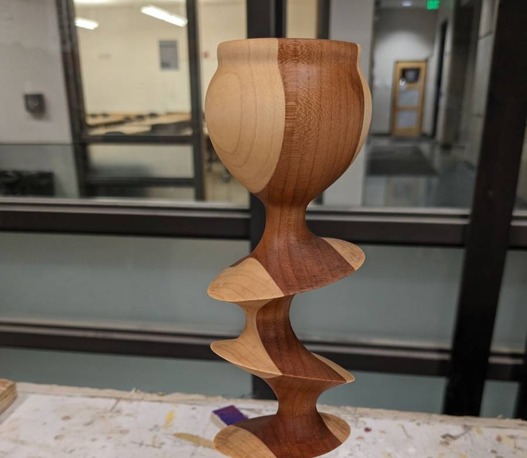
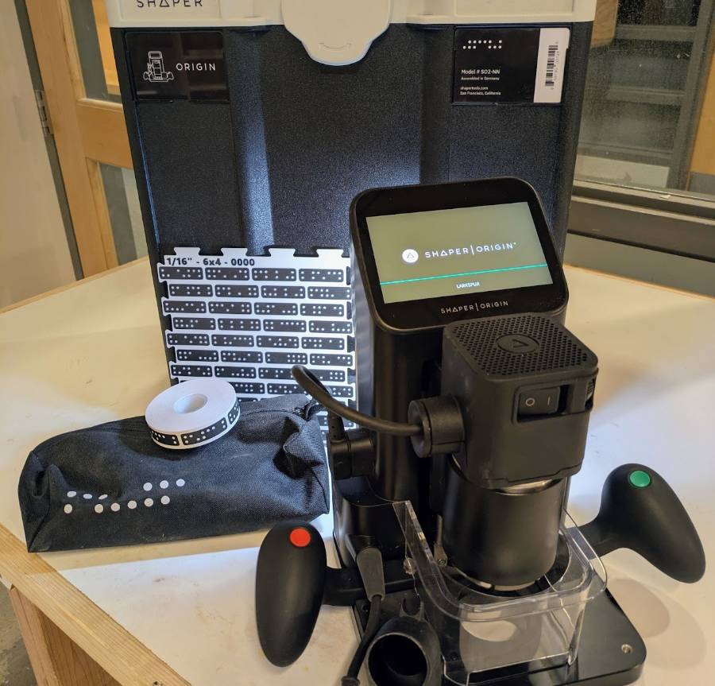

Wood Shop & CNC
Wood Shop equipment is labeled pink, and CNC equipment is labeled blue.
ORIENTATION REQUIRED. Check the BTU Calendar for available times or contact a Mischief Maker.
Wood Shop Equipment

Major Equipment**
- Table saw**
- Band saw**
- Drill press**
- Chop saw**
- Belt sander**
Power Tools
- Random orbit sander
- Palm router
- Drills / drivers
Hand Tools
- Hand saws
- Files
- Measuring tools
- Other hand tools
** For your safety, major equipment including the table saw, band saw, belt sander, chop saw, and drill press is powered off between 10pm and 6am, daily. Tampering with timers is considered a serious safety violation.
Wood Shop Rules
Use of the wood shop requires an orientation from BTU Lab staff. After the orientation, you may use the wood shop under these conditions:
- Observe all safety rules without exception.
- Do not work alone when no one could hear you if you needed help. Stay in earshot.
- Do not operate any tool that you are unfamiliar with. Get help.
- Do not alter any machine in a permanent way.
- Do not remove any tools from the wood shop or BTU Lab without staff approval.
- Do not attempt to repair a malfunctioning tool.
- Report malfunctioning tools. It is okay when a tool breaks under normal circumstances. We just want to know what happened to prevent any possible harm.
- BTU staff can revoke wood shop access for any reason deemed necessary.
- Deadlines, fatigue, and lack of preparation do not justify ignoring any wood shop rule.
Breaking any wood shop rule will result in loss of access to the BTU Lab and the wood shop until both orientations are repeated.
Multiple violations, by one or more people, will result in reduced access for everyone, including locking out machines or the entire space when staff are not available.
CNC

Thanks to generous support, BTU purchased a Shaper Origin CNC router in 2026!
A brief training is required before using the Shaper CNC.
Basic operation of the Shaper can be found here: Shaper Origin video
The Shaper is a precision (expensive) tool! Please contact Zack at zack.weaver@colorado.edu to get started.